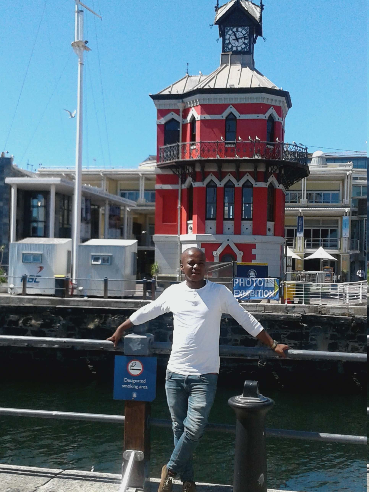
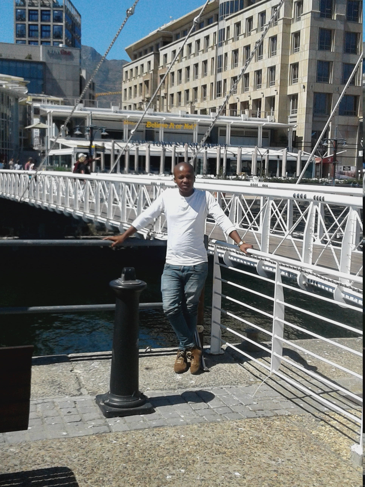
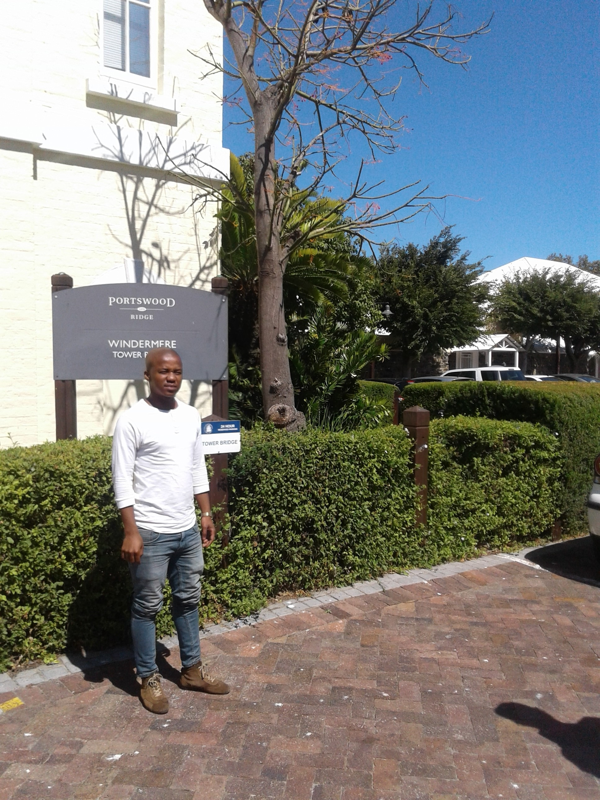

Thabiso Budaza

Monaco
Spoken Language : French
As mentioned earlier, French is Monaco’s official language. It is also the most common dialect in the country due to the role France has had over the state ever since the occupation of Nice and Nizzardo which surrounds Monaco. This language is written using the 26 letters of the Latin Script with four main accents that appear on vowels.
| English Phrase: | French Phrase : |
|---|---|
| Hello! | Bonjour! |
| How are you? | Comment allez-vous? |
| How old are you? | quel âge avez-vous? |

The Victorian Gothic-style Clock Tower has always been an icon of old docks. Situated near the site of the original Bertie's Landing Restaurant, the Waterfront Clock Tower acted as the original Port Captain's office. Construction of the Clock Tower was completed in 1882.
The second floor of the Clock Tower is a decorative mirror room, where the Port Captain could check on all the activities in the harbor. The bottom floor features a tide-gauge mechanism that was used to check the level of the tide.
Restoration of the Clock Tower was completed in 1997, and is now an important focal point in the Waterfront's urban design, and the Clock Tower Centre.
The Clock Tower and Clock Tower Center can be accessed from the greater Waterfront via a pedestrian swing bridge, which opens and closes periodically to allow boats through. The Clock Tower Center features an attractive, albeit smaller, shopping centre. Although it is much smaller than the Victoria Wharf shopping complex, it is much more touristy and interesting.
Interesting facts about "Clocktower":

A swing bridge is a movable bridge that has as its primary structural support a vertical locating pin and support ring, usually at or near to its center of gravity, about which the turning span can then pivot horizontally as shown in the animated illustration to the right. Small swing bridges as found over canals may be pivoted only at one end, opening as would a gate, but require substantial underground structure to support the pivot.
Interesting facts about "Swingbridge":

At African Trading Port (ATP) we have attempted to bring Africa under one roof. Artwork from practically each African country and culture is available. ATP’s roots started with the establishment of an art workshop in Zimbabwe in 1978. We have been housed in our current location; the Old Port Captain’s Building at Cape Town’s Waterfront since 2001.